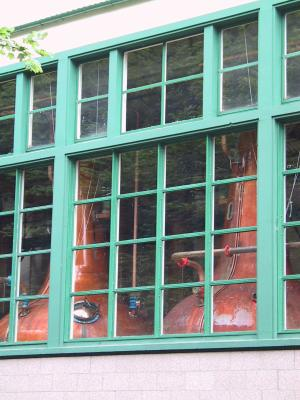
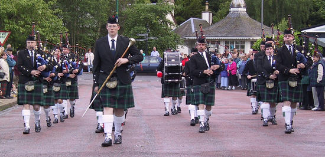

Lots of pics of this day of the tour are here.previous day next dayThe tour was officially over, but we weren't heading back home until Monday night. There isn't a train back on Saturday night, and the bike spaces for the Sunday night train were already taken up by Sue, Neil, and Greta. There are 6 bike spaces available on the train north but only 3 heading south: the other spaces are taken up by seafood being transported to London restaurants. So we'd booked ourselves in for the Monday night train.
Sue & Neil had arranged another night's accommodation for the five of us in Strathpeffer, about 25 miles away from Inverness via the most direct route. Simon and I wanted to take it easy after the strains of yesterday, while the other three were fit enough not to need it, so we told them that we would make our own way there.
It was raining very lightly after breakfast wen we set out. The first thing on the agenda was to check out the noise my bike was making. It sounded suspiciously like the noise a broken bearing might make, so I suspected that it was either one of my pedals or my bottom bracket. I strongly suspected the former since the pedals were quite old, having been on other bikes before this one.
The B&B lady recommended a shop called Bikes of Inverness. We went there and the shop guy quickly diagnosed a shot left pedal. I would need new pedals. Well, no problem, so I got some new ones (Shimano double sided clipless pedals as before) and got them put on. We even got our tires inflated to the proper pressure before heading on.
We went west out of Inverness. Our plan was to do some sightseeing along the way as we rode to Strathpeffer. Our first stop was Moniack Castle, which turned out be a semi-fortified country house built in the mid 1500s. Much more interesting was the fact that it now houses a winery. Now grapes don't grow in Scotland as it's too cold, so the wines were made from everything except grapes, much of which grew right on the state. There were wines made from silver birch sap, elderflowers, plums, black cherries, honey (mead) and sloes (sloes are a kind of tiny plum that is used to give sloe gin its pinkish color) amongst others. We samples all the wines and many of the jams and jellies they also had there and went on a tour of the winery. The small scale of it was pretty amusing: here's the little machine that Joan uses to put glue on the back of the labels before carefully placing them on the bottles, here is where Ewan carefully stacks the bottles for ageing. Back in the shop we decided that the wines were good enough that we selected a case and arranged them to be shipped to us in Cambridge.
 Glen Ord's stills While we were in the winery, Simon complained that his right knee was really hurting him, so we decided to take it as easy as we could for the rest of the day. The rain had stopped by this time so at least the riding was pleasant.
Back on our bikes, we rode a few miles to get to Beauly, where we had lunch. There I looked around in a gift shop and found a little souvenir for myself: stained glass in a Celtic knot pattern. We had a quick look at the semi-ruined priory before headed onwards.
Again we were on our bikes for a very short time: we rode just a couple of miles to the Glen Ord Distillery just outside of Muir of Ord. We went on a tour of this: you can't go to Scotland, pass by dozens of distilleries, and not take a tour of any of them.
This was as much large-scale and automated as the Moniack winery was small scale and done by hand. We saw the large stainless steel mash tun where the sugars are extracted from the barley, the cooler where yeast is added, the dozen huge vats where the liquid ferments, the six huge copper stills where the alcohol is evaporated and condensed, and a tiny fraction of their storage space, where the proto-whiskey sits around for 12 years in sherry or bourbon casks. Back at the shop they gave us small samples. I had one sip of mine and gave the rest to Simon: I don't like strong alcohols. Simon liked it so much that he bought a bottle to take home.
Finally we got back on the bikes an as it was already 4:30, we decided to head straight for the B&B. Just as we were pulling into Strathpeffer, the heavens opened. We pedalled on. I noticed a street sign for the road our B&B was on,, so we went up it (I mean UP, it was a very steep, but thankfully short, climb) to get to our B&B. The others, of course, had already arrived.
The B&B man (the husband of the house) told us that there would be a show of Scottish culture that evening, with a pipe (bagpipes) and drum (snares and one bass) band and some highland dancing, that evening at 8:30. So after a mediocre dinner at one of the hotels, we crossed the street to the car park of the local shops and watched and listened to the Strathpeffer pipe and drum band do their thing. They marched as they played, striding up and down the car park.
 Strathpeffer's pipers After they'd played a selection of tunes, a fellow in a green jacket and tartan trousers announced that there would be some highland dancing. Neil thought it looked like the guy from our B&B: it was hard to tell as we'd only seen him for a little bit, and the announcer was fairly far from us. There were two groups of dancers: little girls, and big girls, all very fit- looking and attractive. They would alternate doing dances such as the sword dance (where the feet go in the spaces marked out by the intersection of two swords) and the Highland Fling. They were accompanied by one of the pipers from the band.
After about a half dozen dances the girls left the stage n the band came back. We'd seen enough of them so we headed back to the B&B. Later the B&B man came in, saw us all in the lounge, and said that we'd missed the proceedings. No, we were there, we said, and we told him we'd enjoyed the show.
Strathpeffer was a Spa town in the Victorian age, with people coming from all over to "take the waters". This seems to have been be a particularly British thing to do at that time: they thought that smelly mineral springs had some kind of curative effect. Or maybe they just liked soaking in the hot water! Who knows.
It is a very nice looking little town. There are all sorts of interesting looking buildings, most of them in good repair. The lamp posts are particularly nice, painted green with gold highlights, and with flowers and thistles picked out in different colors at the top near the bulbs. There seem to be a nice collection of crafts shops, but they weren't open when we were there.
Miles for today: 25.